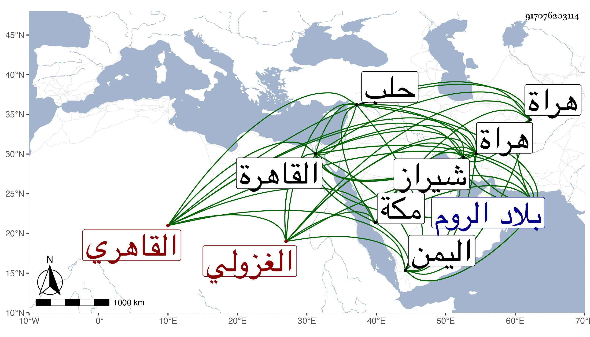

0902Sakhawi.DawLamic.ITO20230111-ara1.EIS1600.917076203114
Biography ID: 917076203114
548
حسين بن أبي بكر بن حسين بدر الدين القاهري الغزولي أخو أحمد الماضي ويعرف بابن جبينة تصغير جبنة . ممن قرأ القرآن وبعض التنبيه وتشاغل بالدلالة في أسواق الغزل كسوق الجمالية ثم قيسارية ابن شيخنا ثم قيسارية الأشرف اينال ، وقام وقعد وحج وجاور ودخل اليمن وغيرها ولم يحصل على طائل . حسين بن بيرحاجي من القاهرة ويدعى بالأمير حسين . ولد بشيراز ونشأ بهراة فخدم سلطانها أبا سعيد بن شاه رخ وترقى عنده حتى صار من جملة خازندارياته ثم تحول إلى الروم واجتمع بمحمود باشاه أجل أمراء محمد بن عثمان فأحبه وحظى عنده ودام ببلاد الروم نحو ثمان سنين ثم استأذنه في الحج فأذن له فلما وصل لحلب وذلك في سنة سبع وسبعين أو التي قبلها توصل بالدوادار الكبير يشبك مهدي حيث مسيره لسوار فلاق بخاطره بحيث أكرمه وأنعم عليه ورجع معه إلى القاهرة فزاد في إكرامه وأنزله بقبته التي بناها كل ذلك لما اشتمل عليه من حسن الصوت والالمام الكبير بعلم الموسيقى مع فهم وعقل ولطف عشرة وذكر بأوراد وقيام وبر للفقراء والواردين عليه القبة . وقد ذكر أنه قرأ على سنان شيخ تربة الدوادار في المتوسط على الكافية الحاجبية ، وقد رأيته بالقبة غير مرة ثم بمكة وقد طلع إليها في البحر من سنة ثمان وتسعين .
